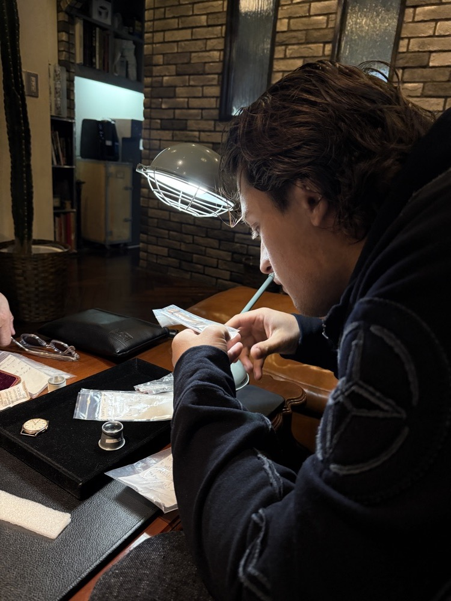
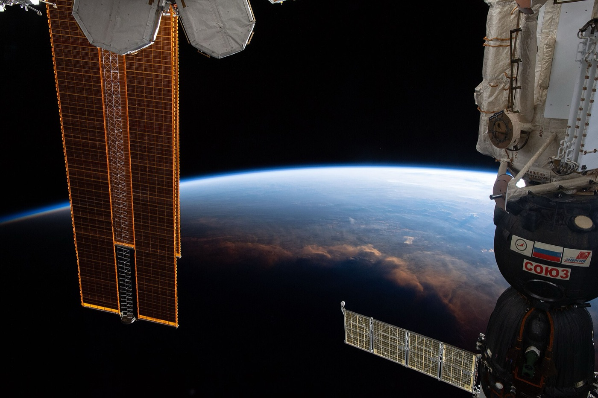
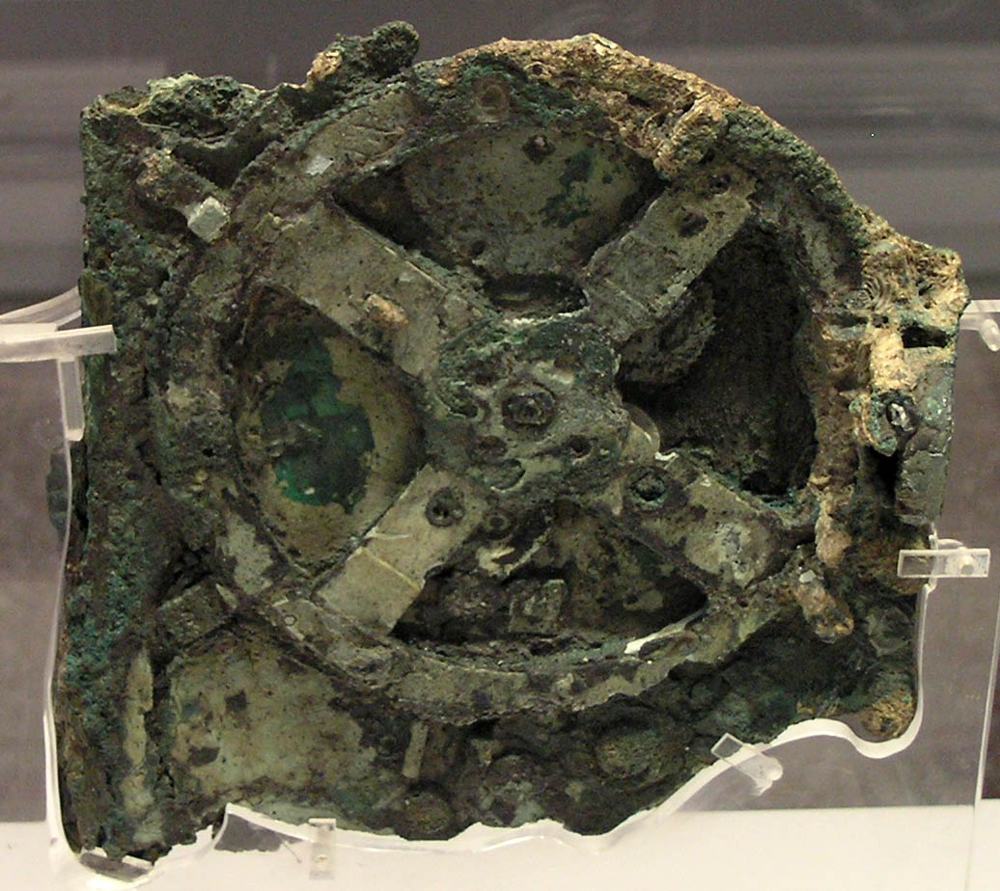
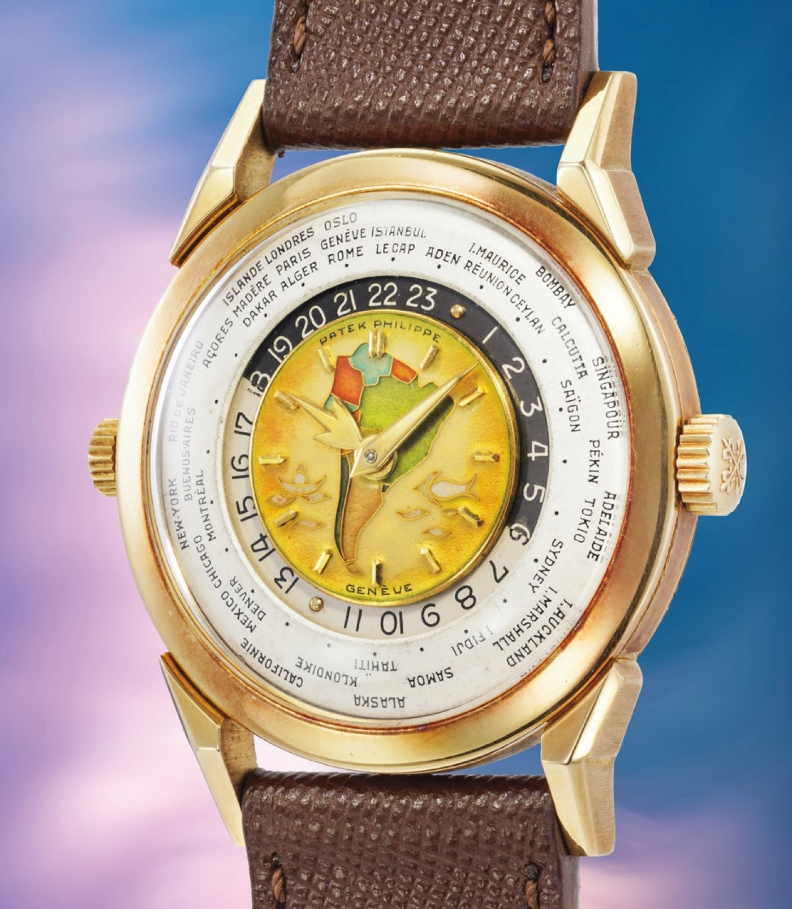
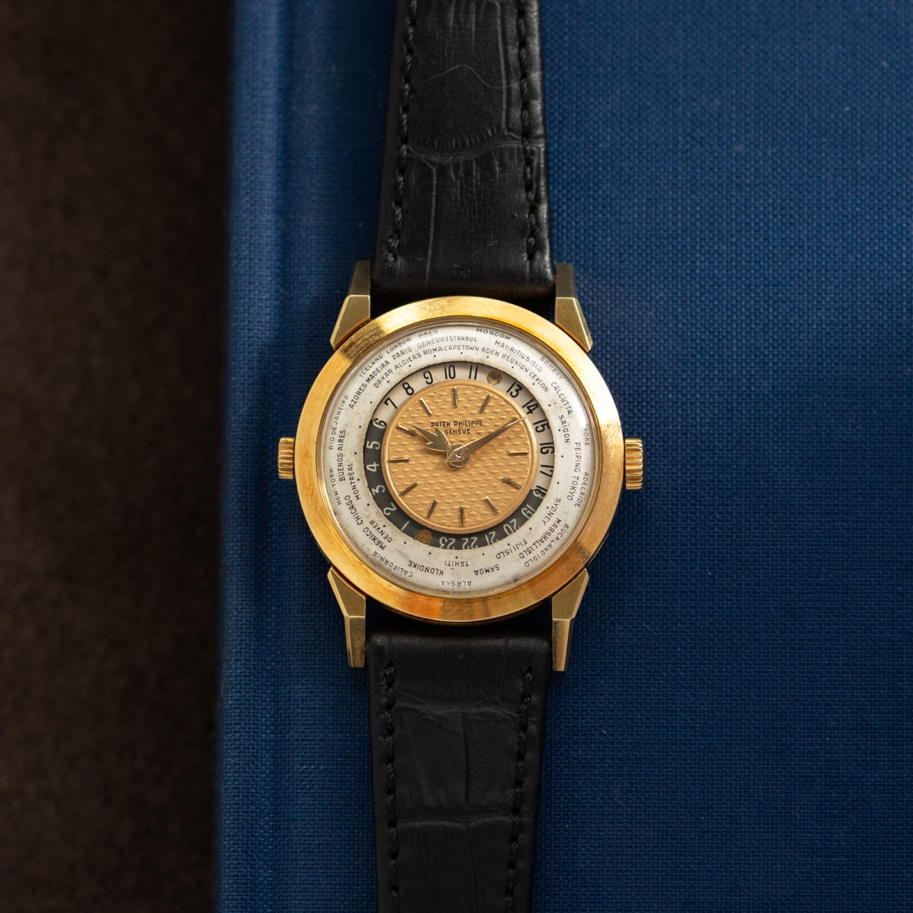
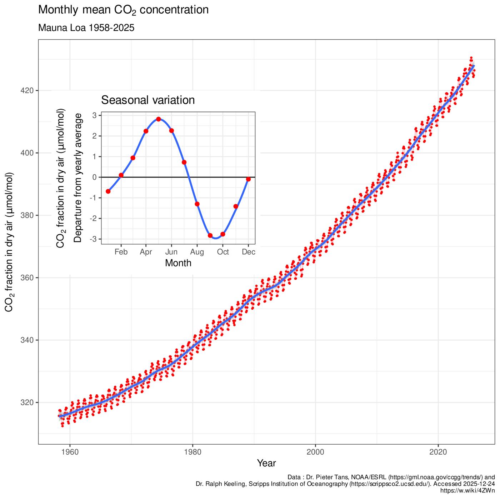

I spend a lot of my non-academic life around vintage watches. They are strange little objects when you stop to look at them: small, mostly mechanical, and built for the single purpose of telling a person where they currently are in a flow that nothing in the device itself is responsible for creating. A wristwatch does not produce time. It points at it. What it points at is the result of a much longer history than the watch itself, and looking at that history carefully turns out to require going back about as far as anything can be gone back.
The earliest part of the story is not human and not even biological. It is the slow appearance, in the early universe, of physical regularities stable enough to be counted: stars, planets, the orbits and rotations that eventually give Earth a day and a year. Life then makes those regularities matter, by becoming the first kind of system that has to organise itself in time to stay alive. Humans inherit a body that is already a working clock and spend the next several thousand years externalising and globalising that capacity, into shared calendars, navigation instruments, railway timetables, time zones, and eventually small mechanical objects that read the time in every major city on Earth simultaneously. The line does not stop there. In the last few decades the same instruments and the same precision have been put to a new use, measuring the way humans are now changing planetary systems, and the question being asked of a clock has started to change again. The wristwatch on a wrist is a remarkable station on a line that is still being drawn.
Stars, Planets, and the Materials of Measurable Time
At the very beginning of the universe, it is not at all clear that time as currently experienced existed in any meaningful sense. There was extreme heat, an opaque plasma, and almost no structure (Origin Story, Ch. 1, "Threshold 1: Quantum Bootstrapping a Universe"). Physics says that time as a dimension was already there, but no structure existed that could be counted, compared, or used as a reference. A universe that is the same everywhere has nothing to set a clock against. In that sense, what humans currently call time required something to repeat reliably before it could become an experience or a measurement, and the first repetitions had to be built (Carroll, From Eternity to Here, ch. 1, on time as a relational rather than absolute quantity).
The first repetitions came with stars. A few hundred million years after the Big Bang, slight density variations let clouds of hydrogen and helium collapse under their own gravity until their cores reached the temperature and pressure needed for fusion to ignite (Origin Story, Ch. 2, "Galaxies and Stars: Threshold 2"). At that moment, the universe contained, for the first time, objects whose behaviour was regular enough to be tracked in detail. Stars introduced their own clocks: the slow burn through their hydrogen reservoirs, the orbital periods of binaries, the rhythmic pulsation of variables. None of this was being watched, but the conditions for watching existed.
A particular kind of star then made measurable time possible on Earth. The Sun is a relatively small main-sequence star, large enough to fuse hydrogen for billions of years and small enough not to burn through its fuel in a cosmic blink (Spier, Big History and the Future of Humanity, ch. 3, "Stars as Nuclear Forges"). The Sun's nearly constant luminosity over very long timescales is the reason any cycle on Earth can be regular at all. A flickering Sun would give a flickering day, a flickering year, and a flickering temperature record, and there would be no reliable thing to count. Earth's orbit and rotation then take that constant input and translate it into the day, the year, and the seasons (Spier, ch. 4, "The Solar System Habitable Zone"; NASA, "Sun Fact Sheet"). What everyday human life calls "time" is, in this sense, deeply parochial. It is the geophysics of one planet around one stable star. On Mars the seasons are far more violent. On Venus, a day is longer than a year.
The Sun did one more thing for human timekeeping. It is part of a long line of stars that have, between them, manufactured almost every chemical element heavier than helium. The Sun itself is a second-generation star, formed from a cloud already enriched by earlier supernovae (Origin Story, Ch. 2, "New Elements and Increasing Chemical Complexity: Threshold 3"). When the solar system condensed, those elements concentrated into rocky planets and asteroid belts (Origin Story, Ch. 3, "Threshold 4: From Molecules to Moons, Planets, and Solar Systems"). The gold of a watch case is, on current evidence, produced predominantly in the rare neutron-star mergers that scatter heavy r-process elements through the galaxy. The iron and the steel of springs and gears come from the iron-group elements forged at the end of massive-star lives. The silicon of quartz oscillators and the synthetic sapphire of bearings and crystals are all, eventually, the dust of older stars (Chaisson, Cosmic Evolution, ch. 3, on the buildup of complexity through stellar generations). A watch is, viewed from the right angle, an unusually organised piece of recycled supernova debris.
By this point in the long story, the physical scaffolding is in place. Stable stars, a stable Sun, a stable Earth, regular planetary cycles, and the elements that future clocks will be built from all exist. What is still missing is anything that can read these regularities, depend on them, or care about them. That step belongs to life.
Rhythm, Synchronisation, and Anticipation
Nothing in this earlier universe of stars and planets was paying attention to itself. Stars burned, planets turned, elements concentrated, but nothing in those systems registered the passage of time as something significant. The first agent to do so was life, and once life appeared, time stopped being only a physical dimension and started being an operational problem.
A living cell is defined, in big-history terms, by its ability to maintain itself far from chemical equilibrium by continuously processing energy (Origin Story, Ch. 4, "Defining Life"; Module 6 lecture, 30:02, on life as an ordered, energy-processing system far from equilibrium). This sounds like a thermodynamic description, but it is also a temporal one. To stay alive, a cell has to make a long series of chemical reactions happen in a specific order, at specific moments, in the face of constant decay. Metabolic pathways must fire in sequence. Genetic material must be copied before division. Signals must reach their target before they break down. Maynard Smith and Szathmáry, in their account of the major transitions in evolution, treat each new level of life as a new way of organising and sequencing chemistry through time (Maynard Smith & Szathmáry, The Major Transitions in Evolution, ch. 1). Inanimate matter unfolds in time but does not need to coordinate. Living matter does, and the requirement to coordinate is what brings time into focus.
A first major shift in life's relationship with time arrived when some organisms learned to use sunlight directly. Photosynthesis tied biology to a stable external rhythm, the day-and-night cycle of an Earth rotating around its Sun (Origin Story, Ch. 5, "Photosynthesis: An Energy Bonanza and a Revolution"; Spier, ch. 5, "Planetary Energy Flows and Life"). Cyanobacteria, then plants, then the entire biosphere began organising their metabolism around an external pulse they had not generated and could not influence. The trace of that adjustment is still everywhere. Almost every cell of almost every organism on Earth has a circadian clock, a roughly twenty-four-hour oscillator built from a small set of genes and proteins, whose original function was to keep an internal schedule in step with the rotating planet. The molecular machinery underlying these clocks was characterised in detail by Jeffrey Hall, Michael Rosbash, and Michael Young, work recognised by the 2017 Nobel Prize in Physiology or Medicine. Long before humans started building escapements, the biosphere was running on clocks.

A second shift came with nervous systems. Once an organism could remember the recent past and form expectations about the near future, it could act on what had not yet happened. Memory and anticipation give a system a working model of time that is much richer than reaction to the present, and Deacon has argued that this is the point at which time becomes meaningful in a deeper sense, because the future starts to matter to something that can expect it (Deacon, Incomplete Nature, ch. 12). Walker and Davies make a complementary point from information theory. Living systems are unusual because they process information about temporal order, not only matter and energy (Walker & Davies, "The Algorithmic Origins of Life," Journal of the Royal Society Interface 10, §3). In humans, those biological capacities are exceptionally developed, and they are part of what makes the next stretch of the story possible. A wristwatch is, in this longer view, an externalisation of capacities that life had already evolved. The cell synchronises. The brain anticipates. The watch is a device that takes both of these out of the body and puts them into a shared form that other people can read.
From Calendars to the World-Time Wristwatch
Humans inherited from earlier life the ability to track rhythms and to imagine futures, but they also added something the rest of the biosphere did not have. Through language and symbolic thought, human communities could pass detailed knowledge about time across generations and refine it cumulatively. Christian calls this collective learning and treats it as the defining feature of the human threshold (Origin Story, Ch. 7, "What Makes Us Different? Crossing Threshold 6"). Information about seasonal migrations, lunar cycles, stellar positions, and ritual schedules no longer had to be rediscovered. It could be stored in story, song, gesture, eventually writing, and improved through use. Mental time travel let people coordinate hunts, plan migrations, and prepare rituals; calendars, schedules, and meeting points existed long before any mechanical clock.
The first dedicated timekeeping devices were responses to a similar problem of coordination. A sundial uses the regular shadow of a gnomon to convert the Sun's diurnal motion into a numerical reading. Water clocks, or clepsydrae, used the rate of flow through a calibrated outlet to mark time when the sky was not cooperating, and in China, India, the Islamic world, and Europe they reached extraordinary sophistication, including Su Song's eleventh-century astronomical clock tower in Kaifeng. The Antikythera mechanism, recovered from a Greek shipwreck and dated to around the second century BCE, is more astonishing still. It is a bronze geared analogue computer that tracked the positions of the Sun and the Moon, predicted eclipses, and indicated the four-year cycle of the Olympic games (Marchant, Decoding the Heavens, chs. 1–3). The mechanism is roughly as complex as a fine eighteenth-century clock and predates anything comparable in Europe by more than a thousand years. The general lesson is that the desire to mechanise time is much older than the mechanical clock.

The first major intensification of structured time as a collective practice came with agriculture. Farming required planting and harvesting at the correct moment, so seasonal cycles stopped being something a community could respond to flexibly and started being something it had to predict (Origin Story, Ch. 8, "How Farming Transformed Human History"). The archaeological record fills with tally bones, lunar markers, and stone alignments oriented to solstices and equinoxes. Long-term planning, storage, and the deferred reward of next year's harvest all rest on this.
Agrarian civilisations took the next step. Surpluses had to be stored, taxed, redistributed, and defended, and that required coordinating large populations across long stretches of time (Origin Story, Ch. 9, "Surpluses, Hierarchies, and a Division of Labor"). Calendars stopped being only practical. They became political. Rulers fixed festival days, tax cycles, and labour duties; many linked themselves explicitly to celestial cycles, divine ancestors, or cosmic order so that their authority would appear timeless. The point Mumford makes in Technics and Civilization, that the clock and not the steam engine is the defining machine of the modern industrial age, is already prefigured here. Whoever sets the calendar organises everyone else's day (Mumford, Technics and Civilization, ch. 1, on the clock as the key machine of the modern industrial age).
The next move was made by religious houses. Benedictine monasteries organised the day around eight canonical hours, and the need to wake the community at the right moment, particularly in winter when the night was long, eventually produced the mechanical escapement clock in late thirteenth- and early fourteenth-century Europe (Landes, Revolution in Time, ch. 3, "Are You Sleeping, Brother John?"; Dohrn-van Rossum, History of the Hour, ch. 2, on monastic discipline and the early mechanical clock). Town clocks followed, and with them a new social discipline. The hour, divided equally, signalled work, market, and prayer to a population that could now be coordinated from a single tower. Mechanical timekeeping started in religious houses, escaped into city life, and from there entered every domain that needed disciplined synchronisation.
By the early modern period, calendars and town clocks structured life on land, but at sea the absence of accurate time was lethal. Latitude could be read from the height of the noon Sun or from the polestar with simple instruments; longitude was a different problem entirely. The Earth rotates roughly fifteen degrees per hour, so knowing longitude required carrying accurate reference time on board. A clock set to the time at a known meridian, compared against local solar noon, gives a ship's position east or west. The British Longitude Act of 1714 offered a prize of up to twenty thousand pounds for a practical solution. The Yorkshire-born clockmaker John Harrison spent four decades building four successive marine chronometers, H1 through H4, refining the escapement, the temperature compensation, and the gimbal mounting required for an instrument that had to keep time accurately on a moving ship (Sobel, Longitude, chs. 3–8). Harrison's H4, tested on a 1761 voyage to Jamaica, kept time to within a handful of seconds across the eighty-one-day passage, a precision so unprecedented that the Board of Longitude initially questioned the result and required a second sea trial before paying out the prize. Precision timekeeping was no longer ornamental. It was navigation infrastructure (Landes, Revolution in Time, pt. II, "Keeping Time", on precision timekeeping as maritime infrastructure).
On land, the same logic moved more slowly until industrialisation made it urgent. Railways could not be safely scheduled if every town along the line kept its own noon, so railway companies imposed standardised time, first regionally and then nationally. The British railways adopted Greenwich Mean Time in the 1840s; the United States adopted four standard zones in 1883 at the initiative of the railroads themselves, decades before the federal government legislated them (Bartky, Selling the True Time: Nineteenth-Century Timekeeping in America, chs. 5–6). The telegraph made it possible to transmit a time signal instantly across a continent, and from then onward harbours, factories, and stock exchanges operated against a single reference instead of their own local rhythms (Bartky, Selling the True Time, chs. 5–6; Origin Story, Ch. 10, "Creating a Single World System").
The political moment is 1884. The International Meridian Conference, held in Washington from October 1 to October 22, fixed Greenwich as the prime meridian and recommended a universal day counted from midnight at Greenwich, divided in principle into twenty-four hours (Howse, Greenwich Time and the Longitude, ch. 5). The conference was not the neutral technical agreement it can sound like in retrospect. France abstained on the Greenwich vote, preferring its own Paris meridian, and until 1911 French legal time was officially defined as "Paris Mean Time, retarded by nine minutes twenty-one seconds," an obvious diplomatic dodge to avoid naming Greenwich. The Canadian engineer Sandford Fleming had spent the previous five years lobbying for a single universal time and a twenty-four-zone scheme, and his proposals shaped much of the eventual agreement (Galison, Einstein's Clocks, Poincaré's Maps, ch. 2, on the politics of time standardisation in the late nineteenth century). The 1884 settlement was less the discovery of a natural division than a contested political consensus, drafted in English, hosted by the United States, and ratified piecemeal by national legislatures over the following decades.
Time zones are not, in practice, a neutral geographic fact either. The twenty-four standard zones of the Greenwich settlement are a clean idealisation that nation-states have repeatedly bent. The People's Republic of China spans roughly five astronomical time zones but, since 1949, runs the entire country on Beijing Time (UTC+8), so that in the far western Xinjiang region the Sun rises and sets several hours later by the clock than it does in Beijing. India uses a single UTC+5:30 across its territory, a half-hour offset adopted at independence in 1947. Nepal, asserting a distinct national identity from India, uses UTC+5:45. Saudi Arabia kept Arabic time, in which clocks were reset to twelve o'clock at sunset each day, until it adopted a fixed UTC+3 in 1968. The United States only legislated nationwide uniform time in the 1966 Uniform Time Act, after decades of municipal variation. Daylight saving time began as a wartime measure during the First World War and continues to be politically contested almost everywhere it is used. None of this was implicit in the 1884 agreement. Each adjustment is a state choosing where to put its foot down on top of the supposed natural grid.
By the middle of the twentieth century the consequences of all of this standardisation were everywhere. Transatlantic aviation, multinational corporations, and live international telecommunications made knowing the time in distant cities a daily concern rather than an abstract curiosity. It was in this context that the Geneva watchmaker Louis Cottier perfected a world-time mechanism in 1931, a central local-time dial surrounded by a rotating twenty-four-hour ring and a city ring naming a reference city for each zone, and went on to deliver around 380 movements built on it to Patek Philippe between 1937 and 1965 (Collectability, "Inside the Movement: Louis Cottier"). The earliest world-time wristwatches and Cottier's reconstructed workshop are preserved today in the Patek Philippe Museum in Geneva.
Patek Philippe produced the Reference 1415 from 1939 as the first wristwatch using Cottier's system. The Reference 2523, introduced around 1953, was the more refined version. Where the 1415 had a fixed bezel and the user rotated the city ring through the single crown, the 2523 added a second crown at ten o'clock that allowed the city ring to be adjusted independently of the rest of the dial, a system Cottier devised in 1953 and Patek Philippe patented in 1959 (Swiss patent no. 340191; Collectability, "Inside the Movement: Louis Cottier"). The case is larger, the visual presentation more confident, and on a small number of examples the centre of the dial carries a hand-painted cloisonné enamel map. Surviving variants depict North America, Europe, the Eurasian landmass, or South America in fired enamel, each one a small painting in its own right. Estimates of total production for the 2523 across all metal and dial variants run to fewer than one hundred pieces. The market has registered that scarcity emphatically: in May 2026 a yellow-gold example with a South America cloisonné dial, one of only two known in that configuration, sold at Phillips in Geneva for 7,961,000 Swiss francs, a record price for the reference (Phillips, The Geneva Watch Auction: XXIII, Geneva, 9 May 2026, lot 27). The watch's reputation as one of the most desirable mid-century wristwatches rests partly on this scarcity and partly on what the dial physically displays.

The list of cities engraved on the city ring is a small political archive of the postwar period. The standard twenty-four-city set, common to many 2523 dials, includes Leopoldville rather than Kinshasa (the city was renamed in 1966), Saigon rather than Ho Chi Minh City (renamed in 1976), Salisbury rather than Harare (renamed in 1982), and Moscow as the reference for the Soviet Union. Different 2523 dial variants exist with slightly different city sets, occasionally substituting one African or South American city for another, and these variants now act as small markers of when the dial was made and for which market. The watch was produced by a Geneva firm in the 1950s, and it carries the geopolitical assumptions of that decade on its face. A 2523 with a 1950s city ring, set today, still works for the underlying time, but the words it uses to do so are a snapshot of a vanished political map. This kind of layering, of technical infrastructure and political memory in a single object, is exactly what makes the Reference 2523 worth choosing as the concrete example for a long history of time.

This past month I travelled to Hong Kong with vintage watch dealer Jasper Lijfering of Amsterdam Vintage Watches to view one particular Reference 2523 that was coming up for sale. The visit was partly to produce a short video and photographs for the dealer's record, and the video itself, which describes the dial, the city ring, and the mechanism in detail, is included here as a source (Madau, "Patek Philippe Reference 2523," 2026). Handling the object in person made the historical layering above feel less academic. The case is heavy. The crowns turn with a particular small resistance. The city ring is clearly engraved with a list of cities that reads, on a 2026 Hong Kong morning, like a slightly faded record of who the world was understood to be seventy years ago.
The Reference 2523 is therefore not chosen here as the climax of the history of time. It is chosen because, when held up to the light, it makes most of the prior history of timekeeping visible at once: the metals of stars, the cycles of Earth, the biological rhythms of the wearer, the calendars of agrarian states, the monastic mechanical clock, the longitude prize, the railway noon, the 1884 conference, the postwar map. Many other twentieth-century wristwatches do similar work. This one happens to do it especially densely.
Timekeeping in the Anthropocene
The infrastructure that produced wristwatches like the Reference 2523 has not stopped developing. It has acquired a use that twentieth-century watchmakers could not have anticipated. The Anthropocene is the proposition that human activity has become a geological force, shifting Earth systems on time scales comparable to natural processes that previously took far longer (Origin Story, Ch. 11, "The Great Acceleration"). Recognising it depends on precise, long-running, dated measurement. The Mauna Loa carbon dioxide record, begun by Charles Keeling in 1958 and still running, shows a continuous and accelerating rise; Antarctic ice cores extend a similar record back roughly 800,000 years. Sea-level series, satellite temperature records, biodiversity surveys, and stratigraphic markers do similar work. In July 2023, the Anthropocene Working Group, a working group of the Subcommission on Quaternary Stratigraphy within the International Commission on Stratigraphy, voted to recommend Crawford Lake in Ontario as the "golden spike" for the start of the Anthropocene epoch, with a proposed start date around 1952, identified in lake sediments by plutonium fallout from atmospheric nuclear testing (Waters et al., "The Anthropocene is functionally and stratigraphically distinct from the Holocene," Science 351, 2016, §discussion of GSSP candidates). The proposal was rejected by the parent Subcommission on Quaternary Stratigraphy in March 2024, leaving the formal stratigraphic Anthropocene contested even at the basic question of when it should be said to begin. That contestation is itself a small reminder that the Anthropocene is, among other things, an unresolved problem in timekeeping.

Steffen and colleagues describe the post-1950 surge in human impact as the "Great Acceleration," precisely because it appears as a synchronised steepening of curves across many independent indicators, energy use, fertiliser consumption, surface temperature, ocean acidification, in the same period (Steffen et al. 2015, "The trajectory of the Anthropocene: The Great Acceleration"). Rockström and colleagues introduced the planetary boundaries framework, defining a "safe operating space for humanity" within which Earth systems remain stable enough for civilisation as currently practised (Rockström et al. 2009, "A safe operating space for humanity"). A 2023 assessment argues that six of the nine boundaries have already been crossed (Richardson et al. 2023, "Earth beyond six of nine planetary boundaries").
In the long arc traced so far, from the cosmic regularities of stars and planets, through the biological organisation of time inside living systems, to the human formalisation and globalisation of shared time, the work of a clock has been primarily descriptive. It tells when something happens. In the Anthropocene, time also becomes normative. The question is no longer only "what time is it?" but "how much time is left?" Carbon budgets, climate-target deadlines, and tipping-point thresholds are timekeeping objects of a kind that did not exist when Cottier's mechanism was designed. A wristwatch, however precise, is no longer obviously the most consequential temporal instrument in everyday life. An IPCC carbon-budget calculation is, in its own way, also a timekeeping device, and so is a climate dashboard that counts down years before a temperature threshold is crossed. This is not the closing of the long history of timekeeping. It is the next chapter, written with the same precision the prior chapters made possible (Module 12 lecture preparation video on the Anthropocene).
A Line Still Being Drawn
A wristwatch is a small object, and the temptation is to read it as a finished thing. The longer view makes that reading harder to sustain. The metals were forged in stars. The day it tracks is set by an Earth made stable by a particular cosmic arrangement. The biological rhythms in its wearer's body are older than any mechanical instrument. The idea that one rotating disc could simultaneously represent twenty-four reference cities is the residue of agriculture, agrarian states, monastic discipline, marine navigation, railways, telegraphs, aviation, and an international agreement signed in 1884. Each of those layers had to fall into place before the object would mean what it now means.
Working through the material above has changed the way I look at the watches I work with. A little big history of timekeeping turns out not to be a history of clocks. It is the longer claim that timekeeping is not a human invention sitting on top of an unrelated cosmos, but a continuation of something the universe started doing as soon as it became regular enough to repeat itself, and that life took up as soon as it became complex enough to anticipate. Humans formalised those capacities and learned to share them across the planet. The Patek Philippe Reference 2523, held in Hong Kong on a recent morning, catches that long sequence in a single object. The Anthropocene, more quietly, asks what we plan to do with the precision we have now that we know what else it can measure.
References
Course materials
- Christian, D. Origin Story: A Big History of Everything. New York: Little, Brown and Company, 2018. Cited section headings (verified against the published EPUB): Ch. 1, "Threshold 1: Quantum Bootstrapping a Universe"; Ch. 2, "Galaxies and Stars: Threshold 2" and "New Elements and Increasing Chemical Complexity: Threshold 3"; Ch. 3, "Threshold 4: From Molecules to Moons, Planets, and Solar Systems"; Ch. 4, "Defining Life"; Ch. 5, "Photosynthesis: An Energy Bonanza and a Revolution"; Ch. 7, "What Makes Us Different? Crossing Threshold 6"; Ch. 8, "How Farming Transformed Human History"; Ch. 9, "Surpluses, Hierarchies, and a Division of Labor"; Ch. 10, "Creating a Single World System"; Ch. 11, "The Great Acceleration".
- Spier, F. Big History and the Future of Humanity. Cited section headings: ch. 3, "Stars as Nuclear Forges"; ch. 4, "The Solar System Habitable Zone"; ch. 5, "Planetary Energy Flows and Life".
- Big History course lecture materials, Module 3 (star formation), Module 5 (Earth), Module 6 (life and complexity, timestamp 30:02 on life as a far-from-equilibrium energy-processing system), Module 11 (globalisation and connectivity), Module 12 (the Anthropocene).
- Brainstorm document (project-internal), Module 11 ("How did the world get connected?") and Module 12 ("How did we initiate the Anthropocene?").
External academic and popular scientific sources
- Carroll, S. (2010). From Eternity to Here: The Quest for the Ultimate Theory of Time. Dutton.
- Chaisson, E. (2001). Cosmic Evolution: The Rise of Complexity in Nature. Harvard University Press.
- NASA Goddard Space Flight Center. "Sun Fact Sheet".
- Maynard Smith, J., & Szathmáry, E. (1995). The Major Transitions in Evolution. Oxford University Press.
- Deacon, T. W. (2012). Incomplete Nature: How Mind Emerged from Matter. W. W. Norton.
- Walker, S. I., & Davies, P. C. W. (2013). "The algorithmic origins of life." Journal of the Royal Society Interface 10(79).
- Hall, J. C., Rosbash, M., & Young, M. W. Nobel Prize in Physiology or Medicine 2017, "for their discoveries of molecular mechanisms controlling the circadian rhythm".
- Marchant, J. (2008). Decoding the Heavens: A 2,000-Year-Old Computer and the Century-Long Search to Discover Its Secrets. Da Capo Press.
- Mumford, L. (1934). Technics and Civilization. Harcourt, Brace and Company. Ch. 1, "Cultural Preparation."
- Dohrn-van Rossum, G. (1996). History of the Hour: Clocks and Modern Temporal Orders. University of Chicago Press.
- Landes, D. S. (1983). Revolution in Time: Clocks and the Making of the Modern World. Harvard University Press.
- Sobel, D. (1995). Longitude: The True Story of a Lone Genius Who Solved the Greatest Scientific Problem of His Time. Walker.
- Bartky, I. R. (2000). Selling the True Time: Nineteenth-Century Timekeeping in America. Stanford University Press.
- Howse, D. (1980). Greenwich Time and the Discovery of the Longitude. Oxford University Press.
- Galison, P. (2003). Einstein's Clocks, Poincaré's Maps: Empires of Time. W. W. Norton.
- Collectability (Reardon, J.). "Inside the Movement: Louis Cottier." On Cottier's 1931 Heures Universelles mechanism, the ~380 movements delivered to Patek Philippe between 1937 and 1965, and the two-crown system devised in 1953 and patented in 1959 (Swiss patent no. 340191).
- Patek Philippe Museum, Geneva. Permanent collection: the earliest Heures Universelles wristwatches (refs. 96 HU, 515 HU, 542 HU, 1937) and Louis Cottier's reconstructed workshop.
- Phillips. The Geneva Watch Auction: XXIII, Geneva, 9 May 2026, lot 27: Patek Philippe Reference 2523, 18k yellow gold, cloisonné enamel "South America" dial (1953), realised CHF 7,961,000.
- Madau, D. (2026). "Patek Philippe Reference 2523." Video produced for Jasper Lijfering, Amsterdam Vintage Watches; recorded in Hong Kong.
- Waters, C. N. et al. (2016). "The Anthropocene is functionally and stratigraphically distinct from the Holocene." Science 351, 137.
- Anthropocene Working Group (2023). Vote in favour of Crawford Lake, Ontario, as the proposed Global Boundary Stratotype Section and Point (GSSP) for the Anthropocene.
- Steffen, W., Broadgate, W., Deutsch, L., Gaffney, O., & Ludwig, C. (2015). "The trajectory of the Anthropocene: The Great Acceleration." The Anthropocene Review 2(1), 81–98.
- Rockström, J. et al. (2009). "A safe operating space for humanity." Nature 461, 472–475.
- Richardson, K. et al. (2023). "Earth beyond six of nine planetary boundaries." Science Advances 9(37).